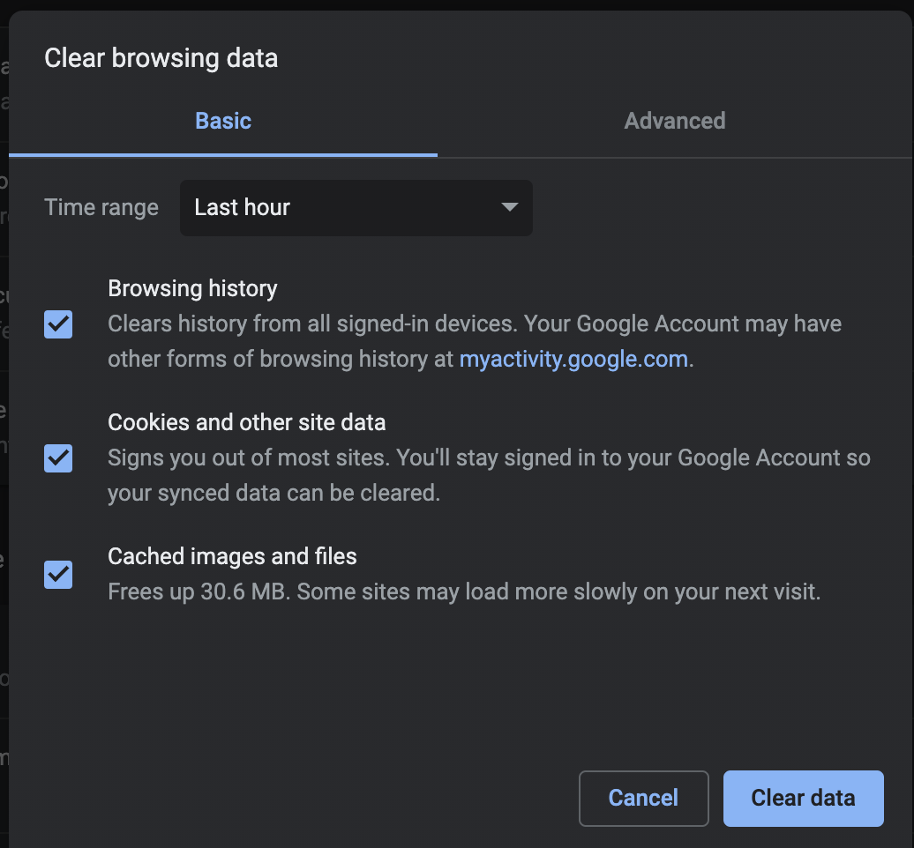
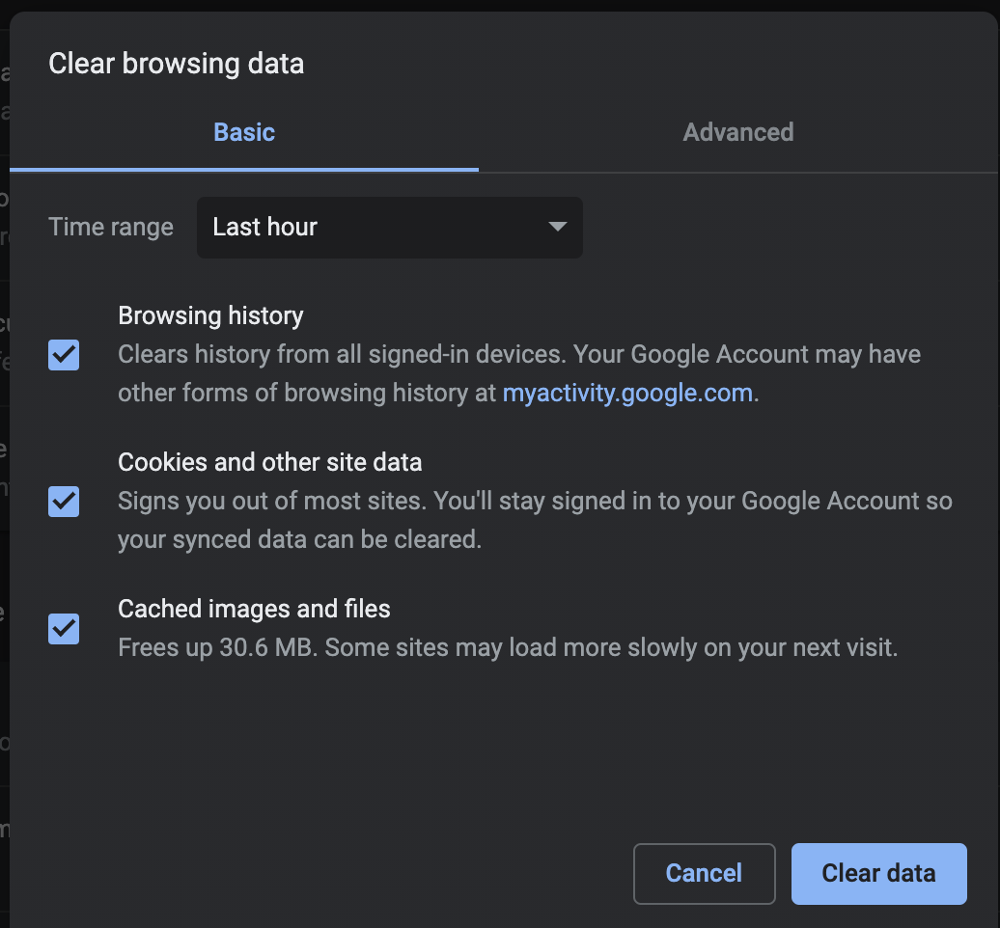

8 Ways To Stay Safe on the Internet
Ad Block
Ad blocking or ad filtering is a software capability for removing or altering online advertising in a web browser or an application. This may be done using browser extensions or other methods.
Clearing Your Cache and History often
This deletes your digital footprint and active cookies on your computer. You can also change it so your search history is not updated at all in your preferences.
 

Private Browsing
Private browsing is a privacy feature in some web browsers. When operating in such a mode, the browser creates a temporary session that is isolated from the browser's main session and user data. In private or incognito mode your browsing history, cookies and site data, or information entered in forms won’t be saved. Your activity however WILL not be hidden from the website you visit or website provider.
Temporary Emails
If you are uncomfortable providing information through email or signing up with email, there are sites that provide temporary ones for one time uses.
Temporary Email
Don't Reply to Spam Emails
These often contain virus packages or cookies to track your data once you click on the email, so if you’re not sure who it is from it is best to just put it in your trash.
Avoid Personality Quizzes
Personality quizzes such as what character are you or we can guess your…(blank) are notorious ways companies get information from you while under the disguise of a fun lil test.
Read ALL terms and Conditions/ fine print:
I know they are long, but make sure you FULLY understand the terms set in place before you agree to something.